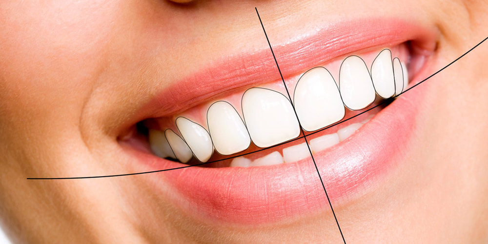

An important objective of esthetic treatment is that the final result should be as close as possible to the patient's expectations, improving his/her facial esthetics and smile.
The digital smile design (DSD) is a digital planning tool for esthetic dentistry, in which the evaluation of the esthetic relationship among the teeth, gingiva, smile, and face is obtained through lines and digital drawings that are inserted on the facial and intraoral photographs of the patient. The use of digital tools offers dentists and technicians a new perspective for diagnosis and treatment plans, facilitating and improving the communication among dentists, technicians, and patient
DSD is beneficial for both patients and dentists. Patients get an opportunity to get involved in designing their smile. The expectations can be visualized before proceeding with the treatment. They can play an essential part in the planning of the treatment. For dentists, it is a tool to show the patients a preview of their smile and can explain the several other smile options that can be made available. This way a patient’s realistic expectations can be established. With DSD the dentists can communicate effectively with the dental labs for the planned smile. Due to the various image export and import features of the software, the dental lab is can visualize the end product better to provide the best possible results.